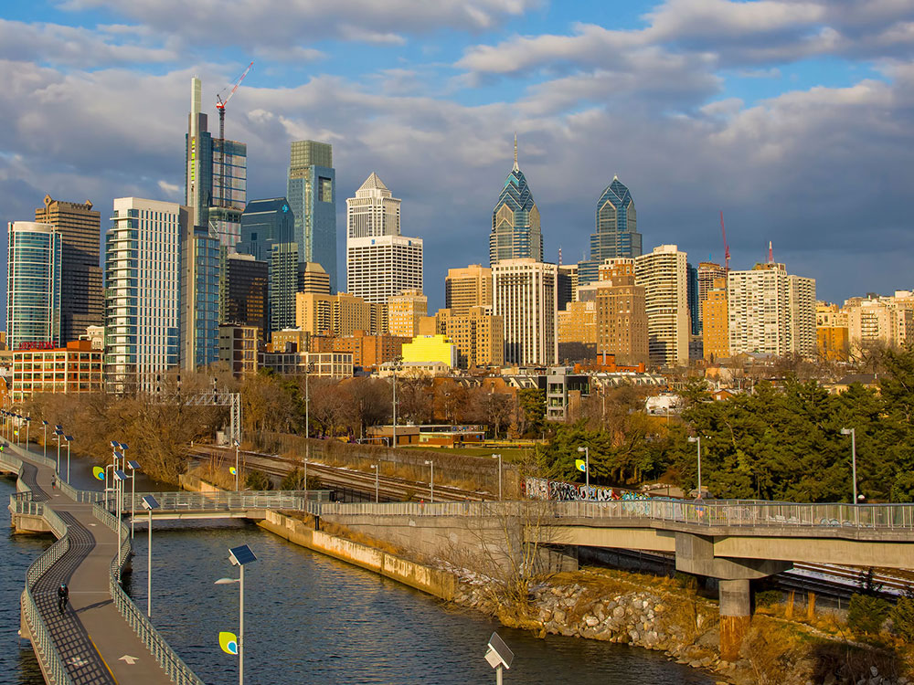
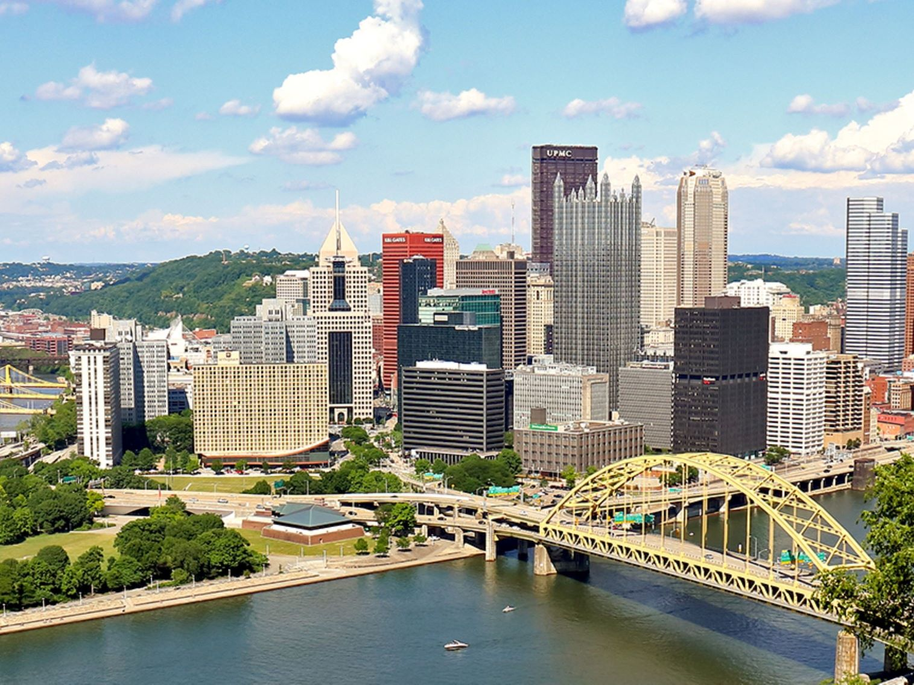
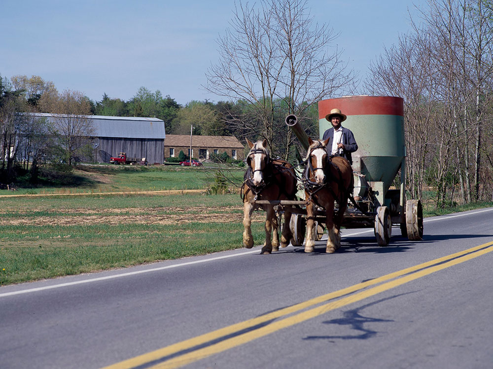

Pennsylvania Travel Guide
Walk historic Philadelphia's Independence Hall, tour Gettysburg's battlefields, and explore Pittsburgh's riverfront and Amish countryside.
Top Locations

_(cropped)-400.jpg)

Places to See in Pennsylvania

Bruce Emmerling, CC BY-SA 4.0, via Wikimedia Commons; Image Size Adjusted

Philadelphia★
Sixth-most populous city in the US and second-most populous city in the Northeastern US played an instrumental role in the American Revolution as a meeting place for the Founding Fathers, who signed the Declaration of Independence and the Constitution
lachrimae72, CC0, via Wikimedia Commons; Image Size Adjusted

Greater Philadelphia Area

Pittsburgh Skyline, CC BY-SA 4.0, via Wikimedia Commons; Image Size Adjusted

Pittsburgh★
Known as the "Steel City" for its more than 300 steel-related businesses, is the second-largest city in Pennsylvania, after Philadelphia

Photo by and (c)2006 Derek Ramsey (Ram-Man), CC BY-SA 2.5, via Wikimedia Commons; Image Size Adjusted

Lancaster County★
Sometimes nicknamed Pennsylvania Dutch Country, is a popular tourist destination, with its Amish community a major attraction
lachrimae72, CC0, via Wikimedia Commons; Image Size Adjusted
Cities
lachrimae72, CC0, via Wikimedia Commons; Image Size Adjusted
lachrimae72, CC0, via Wikimedia Commons; Image Size Adjusted
lachrimae72, CC0, via Wikimedia Commons; Image Size Adjusted
State Park
Pennsylvania, the Keystone State, is a Mid-Atlantic state of about 13 million people and one of the original 13 colonies, founded in 1681 by William Penn as a haven for religious freedom. Harrisburg is the capital, Philadelphia is the largest city, and the name means "Penn's woods."
Visitors come for the history of Philadelphia, including Independence Hall and the Liberty Bell, the Civil War battlefield at Gettysburg, and the Amish farms of Lancaster County. Others come for the museums and rivers of Pittsburgh, the chocolate of Hershey, the arts of New Hope, the Pocono Mountains, and the forests and waterfalls of the Pennsylvania Wilds.
Geography
Pennsylvania is split by the Appalachian Mountains, which run diagonally from southwest to northeast. The Allegheny Plateau covers the northwest, the Ridge and Valley region runs through the center, and the Piedmont and Atlantic Coastal Plain lie in the southeast. Mount Davis, at 3,213 feet (979 m), is the highest point. The Delaware, Susquehanna, and Ohio Rivers drain the state, and Pittsburgh sits where the Allegheny and Monongahela form the Ohio.
History
The Lenape (Delaware), Susquehannock, and Iroquois lived in the region before Dutch and Swedish settlers arrived, and the English granted the land to William Penn in 1681. Pennsylvania's religious tolerance attracted Quakers, Germans, and Scots-Irish, and the Declaration of Independence and the Constitution were written in Philadelphia. Pennsylvania became the second state in 1787. Coal, iron, and steel fueled the Industrial Revolution, the Battle of Gettysburg in 1863 turned the Civil War, and Pittsburgh became the nation's steel capital.
Philadelphia
Philadelphia, founded by William Penn in 1682, is the largest city in Pennsylvania and one of the most historic in the United States. It was the nation's first capital, and the Declaration of Independence and the U.S. Constitution were both written and signed here. Independence National Historical Park, "America's most historic square mile," includes Independence Hall, the Liberty Bell, and Carpenters' Hall, and nearby are the Museum of the American Revolution, the Betsy Ross House, Christ Church, and Elfreth's Alley, the oldest continuously occupied residential street in the country. The Philadelphia Museum of Art is famous for the "Rocky Steps," and Eastern State Penitentiary, Reading Terminal Market, Philadelphia's Magic Gardens, and Boathouse Row on the Schuylkill River are other highlights. Philadelphia is also known for cheesesteaks, soft pretzels, the Mummers Parade, and the Philadelphia Flower Show.
Lancaster County
Lancaster County in southeastern Pennsylvania is the heart of "Pennsylvania Dutch Country," home to one of the largest Amish communities in the United States. Visitors drive past horse-drawn buggies, quilted barns, and neat farms, and can learn about the Plain-sect way of life at the Amish Farm and House and Amish Village. The towns of Bird-in-Hand and Intercourse have farm stands, quilt shops, bakeries, and family-style restaurants with shoofly pie, chow-chow, and whoopie pies. Lancaster, the county seat, has the oldest continuously operating public farmers' market in the country, Central Market, and the Ephrata Cloister preserves an 18th-century religious community. The Railroad Museum of Pennsylvania in Strasburg has one of the best locomotive collections in the country, and Landis Valley is a Pennsylvania German living-history museum. Many Amish do not allow photographs of faces, so visitors should be respectful.
Preserved Military Sites: Gettysburg and Valley Forge
Pennsylvania has some of the most important battlefields and encampments of the American Revolution and the Civil War. Gettysburg National Military Park, the site of the three-day battle in July 1863, is the largest battle of the Civil War and its turning point. The park preserves more than 6,000 acres and 1,300 monuments, and the Gettysburg National Cemetery is where Abraham Lincoln delivered the Gettysburg Address in November 1863. In the town of Gettysburg, the Jennie Wade House, the Shriver House, and the Eisenhower National Historic Site add to the experience. Valley Forge National Historical Park preserves the site where General George Washington's Continental Army camped through the harsh winter of 1777 to 1778, when thousands of soldiers died of disease and exposure but the army emerged better trained. Other sites include Brandywine Battlefield, Washington Crossing, Fort Necessity, and the Flight 93 National Memorial.
Pittsburgh
Pittsburgh, in southwestern Pennsylvania, sits where the Allegheny and Monongahela Rivers join to form the Ohio River, and it is known as the "City of Bridges" for its 446 bridges, more than any other city in the world except Venice. Once the center of American steelmaking, the city has reinvented itself as a hub for education, medicine, and technology, and it consistently ranks among the most livable in the U.S. Point State Park, with its fountain, and Fort Pitt Museum mark the colonial history of the French and Indian War. The Duquesne Incline climbs Mount Washington for one of the best city views in the country. The Cultural District includes the Andy Warhol Museum, the largest museum in the country devoted to a single artist, the Carnegie Museum of Art, the Carnegie Museum of Natural History, the Phipps Conservatory, and the Cathedral of Learning at the University of Pittsburgh. The Heinz History Center and the Strip District market are other highlights, and the Steelers, Pirates, and Penguins draw loyal fans.
Industrial Revolution Sites
Pennsylvania was a driving force of the American Industrial Revolution, with coal, iron, steel, oil, and railroads, and many of the places that powered it are preserved. Hopewell Furnace National Historic Site is a restored 19th-century iron-making village, and the Delaware and Lehigh National Heritage Corridor follows the route of the canals that carried coal to Philadelphia. In Scranton, Steamtown National Historic Site preserves a steam-locomotive collection and rail yard, the Lackawanna Coal Mine Tour takes visitors 300 feet underground, and the Scranton Iron Furnaces are a ruin of a 19th-century ironworks. The National Museum of Industrial History in Bethlehem, near SteelStacks, an arts campus beside the old Bethlehem Steel blast furnaces, tells the story of American manufacturing. In the northwest, Drake Well near Titusville is where Edwin Drake drilled the first commercial oil well in the United States in 1859, and the Penn-Brad Oil Museum shows early oil production. The Railroad Museum of Pennsylvania and U.S. Army Heritage and Education Center add more history, and the Kinzua Bridge was a famous railroad viaduct.
National Protected Areas
Pennsylvania's national park sites include Independence National Historical Park in Philadelphia, with Independence Hall and the Liberty Bell, and Gettysburg National Military Park. Valley Forge National Historical Park preserves the 1777 to 1778 winter encampment, Flight 93 National Memorial honors the passengers and crew of September 11, and Eisenhower National Historic Site is next to the battlefield. The Delaware Water Gap National Recreation Area, Steamtown National Historic Site, Hopewell Furnace, Fort Necessity, and the Appalachian and Delaware National Scenic Trails are also in the state.
State Parks and Historic Sites
Pennsylvania has 121 state parks, and all have free admission. Presque Isle is a sandy peninsula on Lake Erie, Ricketts Glen has 22 waterfalls, and Ohiopyle on the Youghiogheny River is known for whitewater rafting. Cook Forest, Pine Creek Gorge, and Hickory Run offer forests and boulder fields, and Drake Well Museum in Titusville tells the story of the birth of the oil industry. Fallingwater, Frank Lloyd Wright's famous house over a waterfall, and Eastern State Penitentiary are other historic landmarks.
Seasons and When to Visit
Summer is the busiest season, with beaches at Presque Isle, whitewater rafting, and festivals, including July 4 celebrations in Philadelphia. Fall is a favorite for foliage in the Poconos, the Laurel Highlands, and the Wilds, with peak color in October. Winter is cold and snowy, with skiing in the Poconos and holiday events at Longwood Gardens, and spring has blooming gardens and the Philadelphia Flower Show.
This article uses material from the Wikipedia article "Pennsylvania", which is released under the Creative Commons Attribution-Share-Alike License 3.0. Additional information was drawn from National Park Service, Pennsylvania State Parks, and Visit PA.